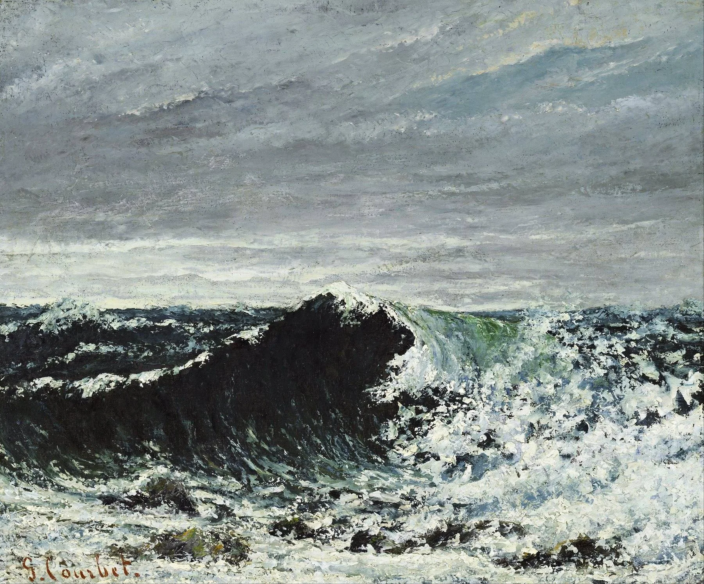
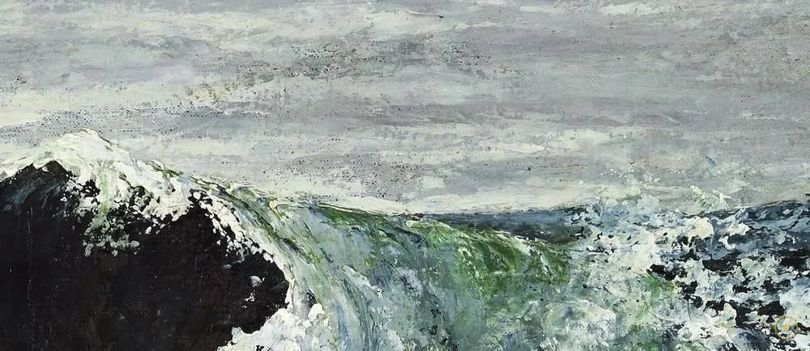
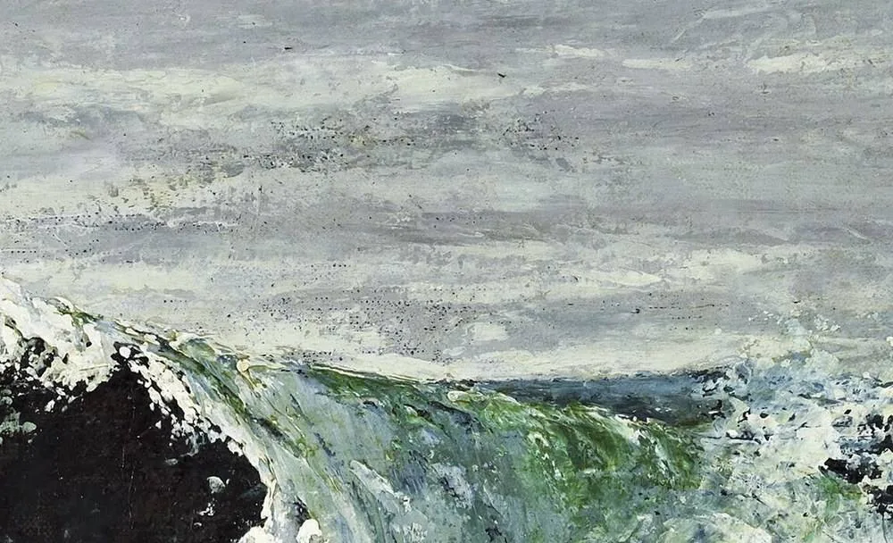
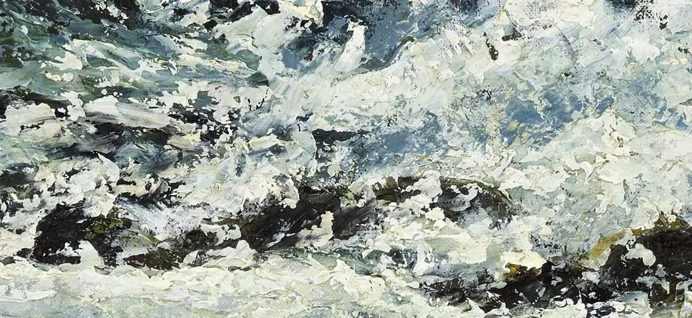
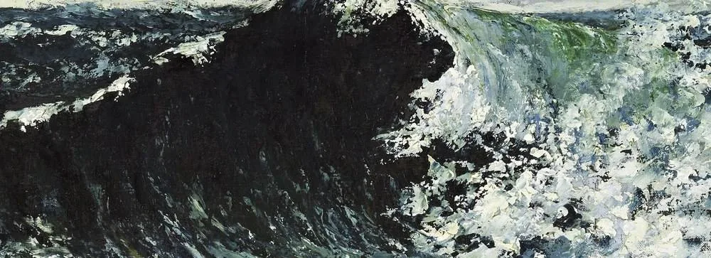
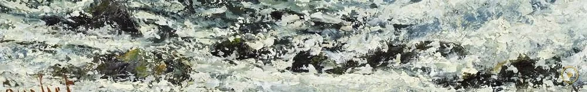
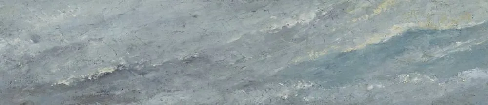
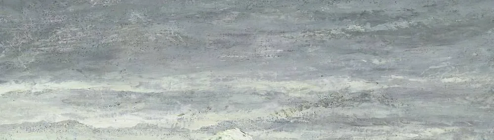
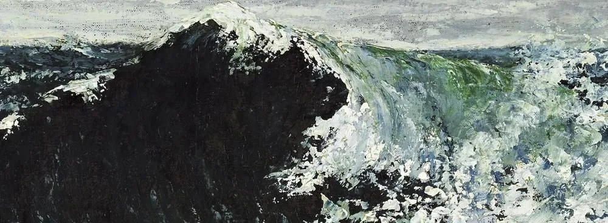

库尔贝说过：他从不画天使，因为他从没见过——这句话，同样适用于这片没有神话、只有物质的浪。
《海浪》(La Vague) 是库尔贝在 1869–1870 年间、于诺曼底埃特雷塔（Étretat）海滨画下的一组海景共有的名字。画面里是一道正在弯折、即将砸落的巨浪：墨绿灰的水墙，顶端被风撕开一团白；没有船，没有人，也没有任何寓意。它被视为写实主义（Realism）在自然题材上的奠基之作——当同时代画家还在用海难与宁芙「提升」海景时，库尔贝让一片无名、无事的浪独自占据画布。
它特殊，也因为它是一组、而非一幅。库尔贝以同一个母题画了多个版本（爱丁堡苏格兰国立美术馆、里昂、奥赛、费城、温特图尔……），构图相近、细节互异，像科学家对同一个瞬间做变奏。本页所用为维基共享的公有领域扫描，不特指某一个藏本。这意味着你看的或许与你在某座美术馆见到的那张「同款」略有不同——这正是《海浪》的宿命。
所以这一页不替你下结论，只带你走近：点开画面上的 ✦ 光点，去看那道弯折的浪脊、落下的泡沫、沉重的水体、被压低的海平线，以及那些被颜料厚厚堆起的地方。留意一个事实——这里没有地平线的戏剧，也没有人，只有海在「做它自己」。
—— 据库尔贝 1861 年《写实主义宣言》意旨转述（「我不会画我没见过的天使」）
在本页左下角，可以点亮一段与画同时代的法国海景音乐。
从一道浪的脊背到一抹落下的泡沫：每一处都是库尔贝与「写实」的较量。

点击画面中的 ✦ 光点 查看画面细节 · 图片来源：Wikimedia Commons（公有领域）
它诞生于一场与官方沙龙的决裂之后；一个世纪后，人们才看清它放出了什么。
1869–1870 · 诺曼底埃特雷塔
1869 至 1870 年间，库尔贝在诺曼底埃特雷塔（Étretat）的海滨画下一系列海景，其中反复出现同一道正在弯折的巨浪，《海浪》(La Vague) 因此成为一组而非一幅画——爱丁堡苏格兰国立美术馆、里昂、奥赛、费城、温特图尔等地各藏一个版本，尺幅与细节略有差异。他像科学家一样对着同一道浪做变奏，把「瞬间的海」拆开研究。
➤1855 → 1870 · 巴黎与写实主义之争
库尔贝早在 1855 年便因作品被官方沙龙拒绝，索性在巴黎世博会旁自建「写实主义亭」(Pavillon du Réalisme) 展出并发布宣言，主张只画「亲眼所见」、拒绝理想化。十余年后，《海浪》把这套主张从人物与劳工，推向了「自然」本身——连风景也不再许诺意义，只呈示物质。他与官方趣味的对抗，贯穿了整个 1860 年代。
➤1900 → 今天 · 现代性的先声
库尔贝 1871 年因参与巴黎公社（摧毁旺多姆圆柱）入狱、后流亡瑞士并于 1877 年客死他乡；而他的海景在身后被重新发现。莫奈、毕沙罗等印象派从他对水光与厚涂的处理中受惠，梵高与表现主义则接过了「颜料即物质」的主张。《海浪》于是被追认为现代风景画——以及现代艺术「不解释、只呈现」态度——的一块基石。

真事一 · 《海浪》是一组，不是一幅。库尔贝在 1869–1870 年以同一个母题画了多个版本，分藏爱丁堡、里昂、奥赛、费城、温特图尔等地；它们构图相近、细节互异。所以当你问「《海浪》在哪」时，答案其实是「在很多馆」。本页所用为维基共享的公有领域扫描，不特指某一藏本。
真事二 · 厚涂是被故意留下的。X 射线与肉眼都可见，浪脊与水面上的颜料是真正「堆」起来的（impasto），刀痕清晰。这不是未完成的草稿，而是库尔贝刻意的物质宣言——他要观者看见「画」这件事本身。修复记录显示这些厚涂历经一百五十年仍稳固。
真事三 · 海平线被刻意压低。与多数海景用清晰地平线引导纵深不同，库尔贝把海天交界线推高、并模糊处理，把视野锁在近处这道浪上。这一「去纵深」的处理，被后世读作写实主义对浪漫派「崇高风景」的有意反叛——画面证据清楚，无需推测。
※ 各版本的归属与具体藏地、库尔贝在埃特雷塔的确切作画时序，以及其与印象派的亲缘关系多为公开艺术史通说或据文献转述；引文据库尔贝宣言意旨转述，措辞或因译本而异。
把画面拆开看：库尔贝把「怎么画海」变成了一场可以逐处审视的实验。

向右上方拱起的水墙与顶端被风撕开的白——写实主义面对自然最坦白的姿势。

调色刀厚堆的铅白，让泡沫在画面上真的凸起来——油画才有的物质感。

墨绿灰的庞大水体，几乎不用纯蓝——英吉利海峡那种冷而浑浊的真实颜色。

浪退后仍在起伏的前海，已预告了印象派对水光的兴趣。

狭窄、半亮不亮、随时要下雨的诺曼底天色——气象记录式的真实。

柔和过渡代替锐利分界，把目光锁回近处这道正在发生的浪。

绿灰、油灰、墨绿与赭石；把海从「蓝色符号」里解放出来。
厚涂与刀痕把绘画的物质性推到前台——后来被梵高接了过去。
库尔贝的写实主义宣言里最著名的一句话是：他不会画天使，因为他从没见过。这句话的锋芒同样指向风景——《海浪》里没有女神的宁芙、没有寓意、没有海难英雄，只有一片无名的浪。把自然从「意义的容器」里解放出来，是现代风景画最关键的一步。
学院派教人用优雅的笔触去「美化」海；库尔贝反其道，用厚涂、用刀痕、用浑浊的绿灰去「砌」海。对他而言，海水首先是一种有重量、有温度的物质，而不是悦目的图案。这种把颜料本身当作被观看对象的做法，比塞尚还早一代人。
诺曼底埃特雷塔的白色峭壁与怒海，是 19 世纪画家们的朝圣地（莫奈晚年也反复画它）。库尔贝在 1869–1870 年扎在这里反复画同一道浪，把一处具体的海岸变成了绘画的实验室。地点因此不只是背景，而是方法的来源。
《海浪》完成后不久，莫奈、毕沙罗们就开始把海与光拆成碎笔；梵高则把厚涂推向燃烧般的强度。艺术史通常把现代风景的起点标在印象派，但库尔贝这道不起眼的浪，已经先把「不解释、只呈现」的态度递到了他们手里。
库尔贝于诺曼底埃特雷塔海滨，以同一道巨浪母题创作《海浪》(La Vague) 系列，油彩布面，多版本传世。
因作品被沙龙拒绝，库尔贝在巴黎世博会旁自建「写实主义亭」并发布宣言，主张只画亲眼所见。
库尔贝因参与巴黎公社、摧毁旺多姆圆柱入狱，后流亡瑞士，1877 年客死异乡。
身后被重新发现；莫奈、毕沙罗、梵高与表现主义从其厚涂与水光处理中受惠。
《海浪》系列分藏爱丁堡、里昂、奥赛、费城、温特图尔等地，被追认为现代风景画基石。